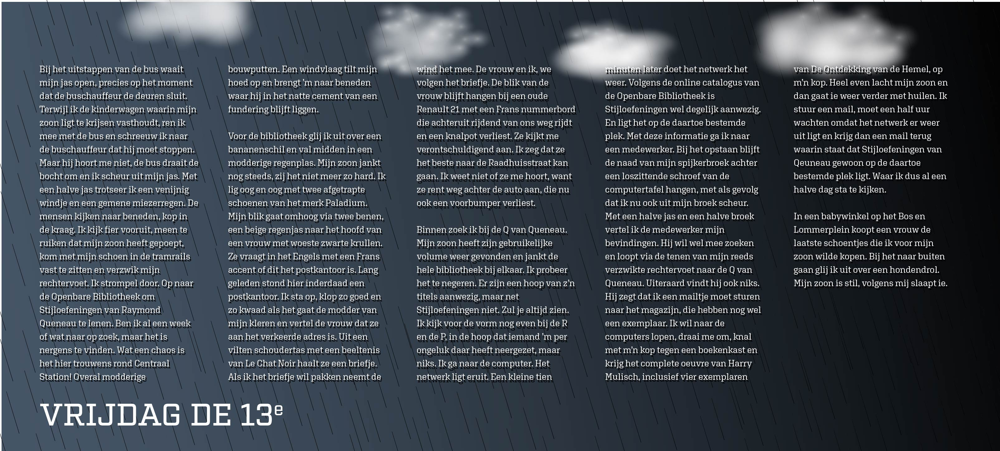

- Rood
- Oranje
- Geel
- Groen
- Turqois
- Blauw
- Paars
- Roze
- Zwart
Blauw
Geert Wilders
Een tsunami van forenzen loopt van en naar het Centraal Station in Amsterdam. Ik ben net uit bus 21 gestapt, een prachtige, roomblanke bus 21 die ontsierd werd ...
Lees verderBlauw
Vrijdag de 13e
Bij het uitstappen van de bus waait mijn jas open, precies op het moment dat de buschauffeur de deuren sluit. Terwijl ik de kinderwagen waarin mijn zoon ligt te...
Lees verderBlauw

Moe
De buschauffeur port me wakker. We zijn bij de eindhalte, Centraal Station. Ik stap uit en duw de kinderwagen voort waarin mijn zoon ligt te slapen...
Lees verderBlauw

Alzheimer
Ik stap uit, euh… Hoe heet het? Zo’n vervoersdinges op wielen. Van de gemeente. Wit met blauw. Kom. Lijn 12. Of was het 21? Ik weet het niet. Ik stap uit en loop achter een ...
Lees verderBlauw

Western
Een stofwolk ontneemt het zicht op de wegrijdende postkoets, die mij net heeft afgezet voor het station van dit door god verlaten prairydorp. Een tumbleweed tuimelt over...
Lees verderBlauw

Oud testament
1. En het was in de dagen van Farao Rutte dat de HEER der heerscharen tot Max had gesproken en hem verzocht had op zoek te gaan naar De Negenennegentig...
Lees verderBlauw
Geert Wilders
Een tsunami van forenzen loopt van en naar het Centraal Station in Amsterdam. Ik ben net uit bus 21 gestapt, een prachtige, roomblanke bus 21 die ontsierd werd ...
Lees verderBlauw
Vrijdag de 13e
Bij het uitstappen van de bus waait mijn jas open, precies op het moment dat de buschauffeur de deuren sluit. Terwijl ik de kinderwagen waarin mijn zoon ligt te...
Lees verderBlauw
Moe
De buschauffeur port me wakker. We zijn bij de eindhalte, Centraal Station. Ik stap uit en duw de kinderwagen voort waarin mijn zoon ligt te slapen...
Lees verderBlauw
Lange Frans
Uh, uh, dit is Lange Frans, uh, uh Daar gaan we dan… Drop die beat. (De beat wordt gedropt, Lange Frans gaat er vol in:) Het is dinsdagochtend, zoveel februari Ik stap uit de bus...
Lees verderBlauw
Recept
Dit gerecht is vrij eenvoudig te maken. Ideaal op een doordeweekse dag als je even niet weet wat je met het leven aan moet. Als je wel weet wat je met het leven aan moet...
Lees verder